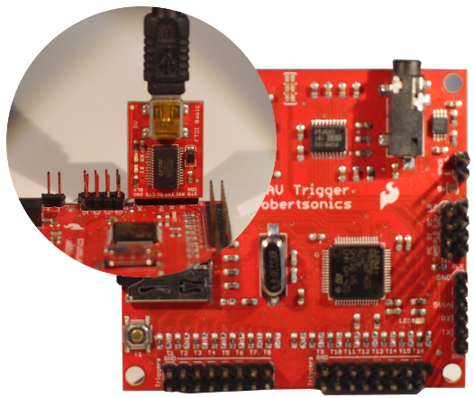

Tutorial
The rswt library has a rather simple api and the method calls don't have any
sideeffects. They just tell the WavTrigger hardware what to do next or read
the status message. So the best way to explore the library is to fire up a
python interpreter session to try out all the commands.
Hardware setup
The hardware setup for the tutorial is pretty simple. There is the WavTrigger
board with headers soldered on all connections. I use a SparkFun FTDI Basic
Breakout rated at 5V for the serial
connection. Any other USB2Serial interface working at 5V logic level will
probably work too. A nice feature of the Sparkfun breakout is that is fits
directly onto the serial port pins of the WavTrigger board. But the image
reveals that its a rather fragile setup from the mechanical point of view. For a
real project you should get an interface with proper mounting screw holes.

A little amp/speaker combination proved to be nice for testing. I started out
with headphones but when the WavTrigger goes into overdrive while testing the
gain control feature this gets a bit rough on the ears.
Software setup
For the tutorial the rswt library must be installed on your system
python-path, or you download the rswt.py file from github and work from the
directory that file is in.
Start up the python interpreter and import the library
>>>import rswt
This should not raise an error unless there is a problem with library installation.
Connect to the WavTrigger
This is the simplest way to establishing a serial connection to the
WavTrigger.
>>> from rswt import WavTrigger wt=rswt.WavTrigger('/dev/ttyUSB0')
The class WavTrigger is imported and a new instance of that class is created.
The serial interface to the device will be opened immediately. The parameter
'/dev/ttyUSB0' is the name of the port. '/dev/ttyUSB0' is a typical portname
on Unix/Linux. On a windows machine the names take the form of 'COM+<number>'.
If this line of code does not raise an exception you are connected to the
WavTrigger. Right after opening the port the __init__() method of the class
reads the the hardware version of the device, the number of polyphonic voices it
plays and the number of tracks found on the SD-Card. These properties are
printed to the commandline in the next example.
>>> from rswt import WavTrigger
>>> wt=rswt.WavTrigger(device='/dev/ttyUSB0',timeout=10.0, baud=57600) wt.version
u'WAV Trigger v1.10'
>>> wt.voices
14
>>> wt.tracks
48
>>>
The __init__() method takes two more arguments. The timeout argument is used
when data is read from the serial port.The default timeout is set to 5 seconds.
This gives the USB enough time to handle the read request. If the read takes
longer there very likely is a problem with the serial port. The WavTrigger
itself never failed to return is data even when all 14 voices are played
simultaneously. If a read operation times out an Exception is raised. It
doesn't speed up the code if a shorter timeout is used.
The baud argument is the baudrate to be used. The default value is 57600.
This should only to be changed when a customized
wavtrigr.ini-file
is used. If the baudrates of the serial port and the rate of the WavTrigger
do not match the connection attempt will fail.
Handling Exceptions
Whenever code deals with external hardware you shouold be prepared that things
will go wrong. The rswt library will raise an exception when that happens.
Here are a few common errors when tring to connect to a WavTrigger
The name of the serial port is wrong:
OSError: [Errno 2] No such file or directory : '/dev/ttyUSB89'
The port exists but you have no access to it:
OSError: [Errno 13] Permission denied: '/dev/ttyUSB0'
The port was opened sucessfully but a read operation timed out:
OSError: [Errno 110] Connection timed out
This will happen to you for instance when the power supply of the WavTrigger
is not plugged in. The serial port interface will write its request without
errors but the device never answers.
Once the connection to the WavTriggeris established your code must be prepared
for situations like an unplugged powersupply or USB-Cable.
Wrap all calls into the library with a try: .. except: .. block.
Playing tracks
One major feature of the WavTrigger is that it can play and mix up to 14
polyphonic tracks. That puts the WavTrigger somewhere in between a
audio player device and a musical instrument.
Standard audio player mode
If you want the WavTrigger to act like a normal audio player that only plays
a single track at the time you start a track with the solo(track) method.
solo() will stop all currently playing tracks and start the track given in the
argument. You can stop(),pause() and resume() a track. Starting a
different track with solo(otherTrack) while a track is still playing will stop
the current track and start the new one.
>>> import rswt
>>> wt=rswt.WavTrigger('/dev/ttyUSB0')
>>> #play track 80
>>> wt.solo(80)
>>> wt.pause(80)
>>> wt.resume(80)
>>> wt.stop(80)
>>> wt.close()
Polyphonic mode
When tracks are started with the play(track) instead of solo(track)
the WavTrigger is in polyphonic mode where up to 14 tracks can be played at the
same time. Each call to play() starts a new track while the others keep
playing. All playing tracks can be can be stopped with the stopAll() command.
>>>#play a strange chord
>>>wt.play(2);wt.play(5);wt.play(9)
>>>#Wait a little; then stop all tracks
>>>wt.stopAll()
This little example starts 3 tracks and after a while all tracks are stopped. A
little problem with this code is that the three tracks do not start in sync with
each other. The library still has to send out 3 commands to the WavTrigger and
there is a delay of a few milliseconds between the tracks. But there is a
solution to this.
The library provides methods to play tracks in sync with each other. The idea is
to load the tracks into memory and pause them immediately. Then all tracks are
started with a single command resumeAll().
>>> #load the tracks
>>> wt.load(2)
>>> wt.load(5)
>>> wt.load(9)
>>> #all tracks are waiting to be played
>>> wt.resumeAll()
>>> #wait a bit
>>> wt.stopAll()
Check the status of playing tracks.
Sometimes you might need to know if the WavTrigger is currently playing any
tracks. You can call the playing() method any time and it returns a list of the
tracks that the WavTrigger plays. If the list is empty no tracks are playing.
>>> wt.play(1);wt.play(2);wt.play(3)
>>> wt.playing()
[1, 2, 3]
Here we started 3 tracks and called playing() while they are still on. As you
can see the list contains tree track numbers.
Note
There is a bug in the original firmware (
version 1.00) of theWavTriggerwhich shipped in 2014/2015.
Theplaying()method returns the track number values -1. The return value of the above example would be[0,1,2]instead of[1,2,3]. This bug is fixed with theWavTriggerfirmware update1.21
A simple test if any track is playing would be
>>>if(len(wt.playing())==0:
>>> #do something
Looping tracks
The WavTrigger can set a loop flag for tracks. When the flag is set with
loop(track) the track will repeat forever once its started. The loop flag is
not cleared by a stop() command. If the track is restarted later it will still
be in loop mode. Only a explicit call to unLoop(track) clears the flag.
>>> wt.loop(2)
>>> wt.loop(5)
>>> wt.loop(9)
>>> wt.play(2);wt.play(5);wt.play(9)
>>> #Wait a little
>>> wt.stopAll()
>>> wt.play(5) #still plays in loop mode
>>> wt.unLoop(5) #track plays to the end and stops
Volume settings
The WavTrigger supports independent volume settings for each track and a master
volume for the output. The users
guide says
about this:
Initial Volume: This gain will be applied to the final mix output of the WAV Trigger, until overridden by a volume command. The range is -80dB to +10dB, and the default value is 0dB (unity gain). This gain affects the final output mix of the WAV Trigger, not the individual tracks that make up the mix.
When I started to experiment with the WavTrigger volume settings I created a
few test files that used the full range of values a signal can have in a
wav-file. Playing these tracks with the default settings of the WavTrigger
produced a nice clean sinus output. When I raised the gain of the master output
to +3dB very awful distorsion noise was added to the signal. When I raised the
level to +6dB some protection circuit in my bluetooth speaker switched it off.
When I implemented the commands for volume settings on the WavTrigger I decided to
create 2 groups of commands volume and gain.
The masterVolume(value) and the trackVolume(track,value) set the volume from
a range of 0..100. A level of 100 sets the gain for the track or the output
to 0dB. The good thing about this is if your original signal is free from
distorsion you will never get any distorsion on the output. If you prepare the
tracks on the SD-Card by normalizing them to 0dB there is no need for an
amplification of the signal.
But if you prefer to use the original gain settings the WavTrigger offers the
masterGain(value) and trackGain(track, value) methods are there too.
>>> wt.trackVolume(1,50)
>>> wt.play(1)
>>> wt.trackVolume(5,70)
>>> wt.play(5)
>>> #No play the mix
>>> wt.play(1);wt.play(5)
Don't do this while listening over headphones!
>>> wt.masterGain(5)
>>> wt.trackGain(1,0)
>>> wt.trackGain(5,3)
>>> wt.play(1);wt.play(5)
Fading
The WavTrigger has two more volume related commands to offer. The fade(track,
volume, duration) command fades the volume of a certain track to a new level in
a given timespan. The fadeOut(track,duration) command fades the volume of a
track to 0 in a given timespan and then stops the track.
>>> wt.trackVolume(80,0) #Volume=0 for track 80
>>> wt.play(80) #starts playing, but we hear nothing
>>> wt.fade(80,100,2000) #fade to max in 2000 milliseconds
>>> wt.fadeOut(80,2000) #fade out and stop the track
Pitch
This function is not available in the firmware version the
WavTriggershipped in Spring 2015. You need a version >= 1.10, an update utility and instructions are on the RobertSonics website.
With the new firmware installed you can change the pitch of the output signal of
the WavTrigger. There is no way to change the pitch of an individual track.
Technically the samplerate of the audio engine is set but musically the height
of the tone changes so I called the method pitch(value).
>>> wt.pitch(-37767) #Pitch down
>>> wt.play(80)
>>> wt.pitch(37767) #Pitch up
>>> wt.play(80)
>>>
>>> def jitter():
... for i in range(37760,-37760,-10):
... wt.pitch(i)
>>> wt.play(80)
>>> jitter() #Pitch down while playing the tracks
>>> wt.pitch(0) #restore original pitch level
The onboard amplifier
The WavTrigger is equipped with an 2W mono amp. Connect a speaker
and switch the amplifier On or Off from your code.
Note: The very first batch of
WavTriggerboards that were produced had a
hardware problem with the onboard amp. This was fixed in later versions. Please read this blog post about the problem before you switch the onboard amplifier on for the first time!
>>> wt.amplifierOn()
>>> wt.play(1)
>>> #Let it play a while
>>> wt.amplifierOff()
>>> #silence
Switching the onboard amplifier On or Off has no effect on the signal
on the output jack. There is no way to switch the line-out signal off.
Closing the connection
When the connection closed the WavTrigger will not stop any playing tracks.
Any other configuration changes you made like setting the volume level or
setting the loop status for tracks are still in effect.
This track will play forever! (or at least until you pull the plug on the
WavTrigger)
>>> import rswt
>>> wt=rswt.WavTrigger('/dev/ttyUSB0')
>>> wt.loop(1)
>>> wt.play(1)
>>> wt.close()
 rswt Project on Github
rswt Project on Github e.fahle@wayoda.org
e.fahle@wayoda.org